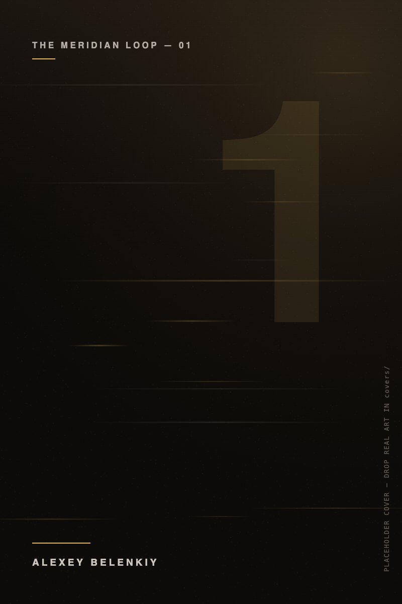

La caduta del tempo
Il passato è un'arma carica.
Ogni correzione lascia una cicatrice.

PLACEHOLDER — Il Meridian Loop si sta sfilacciando: i giorni corretti tornano a riva come maree di tempo mal ricordato. Il secondo libro segue i revisori inviati a contare ciò che la storia ha perso in silenzio.